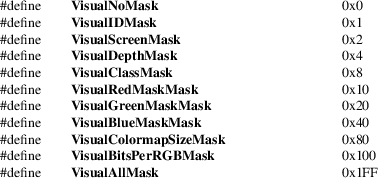

XGetVisualInfo, XMatchVisualInfo, XVisualIDFromVisual, XVisualInfo − obtain visual information and visual structure
|
XVisualInfo *XGetVisualInfo(Display *display, long vinfo_mask, XVisualInfo *vinfo_template, int *nitems_return); | |
|
Status XMatchVisualInfo(Display *display, int screen, int depth, int class, XVisualInfo *vinfo_return); | |
|
VisualID XVisualIDFromVisual(Visual *visual); |
|
class |
Specifies the class of the screen. |
|||
|
depth |
Specifies the depth of the screen. |
|||
|
display |
Specifies the connection to the X server. |
nitems_return
Returns the number of matching visual structures.
|
screen |
Specifies the screen. |
|||
|
visual |
Specifies the visual type. |
vinfo_mask
Specifies the visual mask value.
vinfo_return
Returns the matched visual information.
vinfo_template
Specifies the visual attributes that are to be used in matching the visual structures.
The XGetVisualInfo function returns a list of visual structures that have attributes equal to the attributes specified by vinfo_template. If no visual structures match the template using the specified vinfo_mask, XGetVisualInfo returns a NULL. To free the data returned by this function, use XFree.
The XMatchVisualInfo function returns the visual information for a visual that matches the specified depth and class for a screen. Because multiple visuals that match the specified depth and class can exist, the exact visual chosen is undefined. If a visual is found, XMatchVisualInfo returns nonzero and the information on the visual to vinfo_return. Otherwise, when a visual is not found, XMatchVisualInfo returns zero.
The XVisualIDFromVisual function returns the visual ID for the specified visual type.
The XVisualInfo structure contains:
/* Visual information mask bits */

/* Values */
typedef struct
{
Visual *visual;
VisualID visualid;
int screen;
int depth;
int class;
unsigned long red_mask;
unsigned long green_mask;
unsigned long blue_mask;
int colormap_size;
int bits_per_rgb;
} XVisualInfo;
XFree(3)
Xlib − C Language X Interface